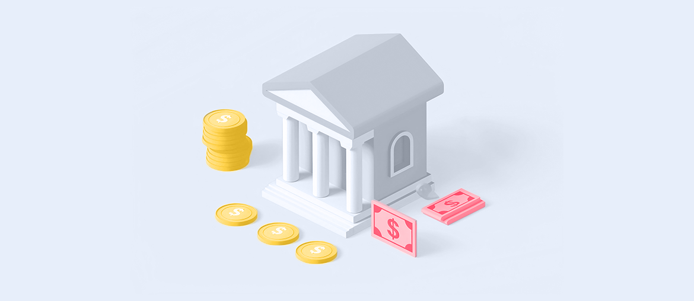

1
Map support patterns
Map the Cloud Competence Center backlog against support tickets from banking apps, desktop tooling, and infrastructure handoffs.
Saw 3 Banken IT is adding IT Support while your Cloud Competence Center carries more banking apps and infrastructure. This page shows where Elinext can help without replacing your local team.
A dedicated squad under your PO or PM for an 8-week pilot, with weekly demos and a clear handover.
Map the Cloud Competence Center backlog against support tickets from banking apps, desktop tooling, and infrastructure handoffs.
Stabilize key Spring Boot services with better monitoring, runbooks, and release checks before incidents reach support.
Automate regression tests around login, Security App approval, QR and IBAN flows in the Oberbank mobile path.
Hand over clean playbooks, CI checks, and a backlog for the next quarter of cloud optimization.
Elinext is a full-cycle software development company, active since 1997, with about 700 in-house specialists and no freelancers. We build mobile, backend, web, QA, DevOps, and AI teams for regulated firms. For a banking IT provider, the useful parts are ISO 27001, ISO 9001, Java/.NET depth, QA automation, and the dedicated-team model.
That mix fits a private-cloud banking squad that must move fast while keeping security and release quality visible.

Elinext built bank-grade Java, Spring, Azure Kubernetes, Prometheus, Angular, MongoDB, and PostgreSQL work for cash operations.
Read the case study
Elinext added QA, DevOps, test coverage, and release control for a banking application with high transaction risk.
Read the case study